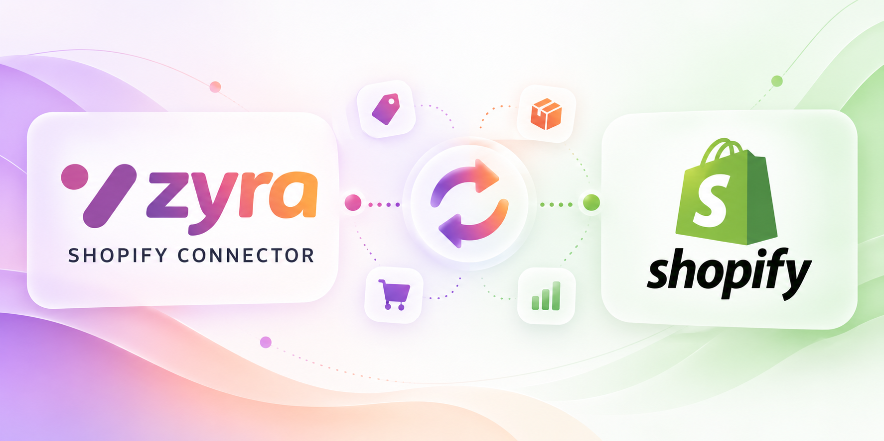

▦
Multiple Shopify stores
Configure independent stores, companies, warehouses, pricelists, sales teams and salespeople.

An order-first Shopify connector that resolves customers, addresses and products before creating sales orders. Designed for reliable imports, accurate accounting handoffs and complete operational visibility.
Instead of blindly importing disconnected records, the connector follows a dependency-aware sequence. Unresolved mappings can be held for review before a sale order is finalized.
Read Shopify order details and status.
Match existing partner or create a new one.
Reuse billing and delivery contacts.
Resolve variants, SKU and barcode.
Apply pricing, tax and review rules.
Connect stores, keep records aligned, and give operations a clear path from incoming orders to Odoo documents.
Configure independent stores, companies, warehouses, pricelists, sales teams and salespeople.
Import by date, order IDs or sync checkpoint, with scheduled runs and configurable filters.
Match customer identities by mapping, Shopify ID, email or phone. Support guest checkout.
Map Shopify variants to Odoo variants using saved IDs, SKU, attributes and barcode.
Handle discounts, shipping, taxes and payment terms with configurable reconciliation tolerance.
Optionally generate invoices and capture Shopify financial, cancellation and fulfillment statuses.
Unique external references, idempotent imports and review of potential manually created duplicates.
Flag missing product mappings, mismatched totals and processing failures for manual attention.
Store-level credentials, connection tests, API configuration, rate-limit handling and back-off.
Import status, mapping exceptions, retry queues and readable logs make it easier to troubleshoot without searching through technical output.